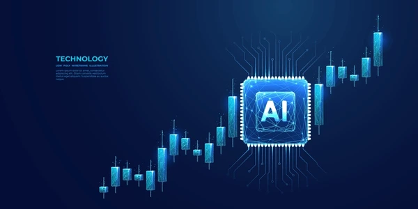

Tech • Stock • Crypto News
Portal informasi perkembangan teknologi, pasar saham, dan cryptocurrency terbaru.

Big Tech Gelontorkan Dana Besar untuk AI
30 April 2026Meta, Google, Amazon, dan Microsoft meningkatkan investasi besar untuk pengembangan pusat data AI serta chip generasi baru.
Baca SumberSmartphone Lipat Generasi Baru Resmi Dirilis
30 April 2026Brand teknologi dunia memperkenalkan ponsel foldable terbaru dengan layar fleksibel, desain tipis, dan performa flagship modern.
Baca SumberNvidia Dorong Kenaikan Saham Teknologi
29 April 2026Saham Nvidia dan perusahaan semikonduktor lainnya terus menguat berkat tingginya permintaan GPU AI dari perusahaan teknologi dunia.
Baca SumberBitcoin dan Ethereum Bergerak Fluktuatif
30 April 2026Pasar cryptocurrency bergerak naik turun setelah laporan pendapatan Big Tech dan keputusan suku bunga global.
Baca SumberMarket Snapshot • 30 April 2026
NASDAQ ▲ +1.8%
NVDA ▲ +4.1%
BTC ▼ -1.3%
ETH ▼ -0.9%